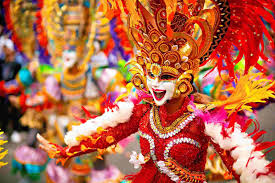
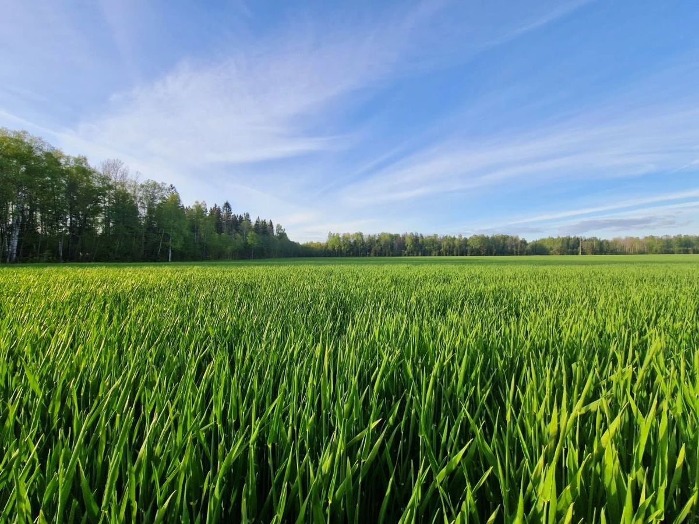

Negros Occidental
Home to sugarcane fields, MassKara masks, and ancestral warmth—Negros Occidental shines with heritage and hospitality.
- Bayanihan: Community unity
- Paggalang: Respect for elders
- Masinadyahon: Joyful spirit



Home to sugarcane fields, MassKara masks, and ancestral warmth—Negros Occidental shines with heritage and hospitality.